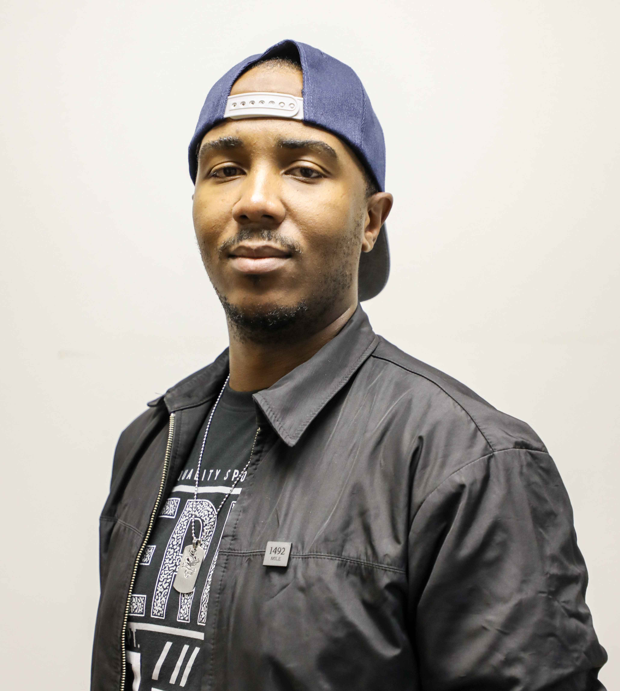

Shin Ghomsi

Summary
I am an individual who is fascinated with the digital age. I am analytical and love solving problems. This makes web development and graphic designing very exciting for me.
Education
- Diploma, Multimedia and design - CityVarsity (2015-2017)
Work experience
-
Basketball and Rugby Assistant Coach - Wendywood High School
2013-2015
- Keeping players fit
- Monitor player progress
-
Freelance graphic designer and Front-end developer
2013-2017
- Create artwork for schools / College campaigns
- Create artwork for government affiliates
- Print artwork for clients
- Design, develope and maintain client websites
- Record and edit videos
-
Graphic Designer - Meropa Communications
Sept 2017 - May 2019
- Create artwork for their various clients and campaigns
- Assisted in creating animated components for videos
-
Co-owner and Co-founder of Emporel Design
May 2019 - Current
- Creating and publishing artwork for client campaigns
- Design and develope websites for clients
Skills
- Adobe Photoshop
- Adobe Illustrator
- Adobe Indesign
- Adobe XD
- Adobe AfterEffects
- Microsoft word
- html5
- CSS3
- Canva
Awards and Certifications
- Diploma in Multimedia and Design
Other